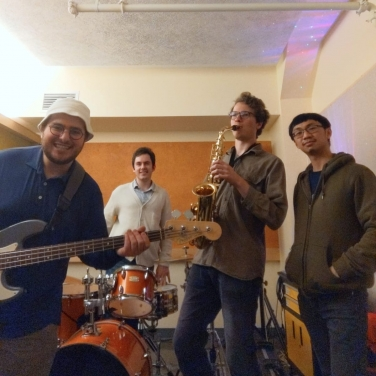

Welcome to Mutual Beef
Click the "play" button to hear our music!
Mutual Beef is a Boston-based jazz band that specializes in groovy, improvisational tunes. We're all about butchering the classics and cooking up fresh new tunes. Our unique sound is a cut above the rest! It is sure to leave you sizzling with excitement and have you moo-ving and grooving all night long.
Whether you're a carnivore, herbivore, or anything in between, we've got something for everyone. So come on down and let us give you a musical feast that you won't forget. We guarantee it'll be a rare and well-done experience all at once!
Who we are
- P. "The Beef Baron" Jan-Stas - Sax
- E. "The Meat Maestro" Peterson - Drums
- M. "The Funky Butcher" Dardet - Bass
- J. "The Sirloin Siren" Chang - Keys